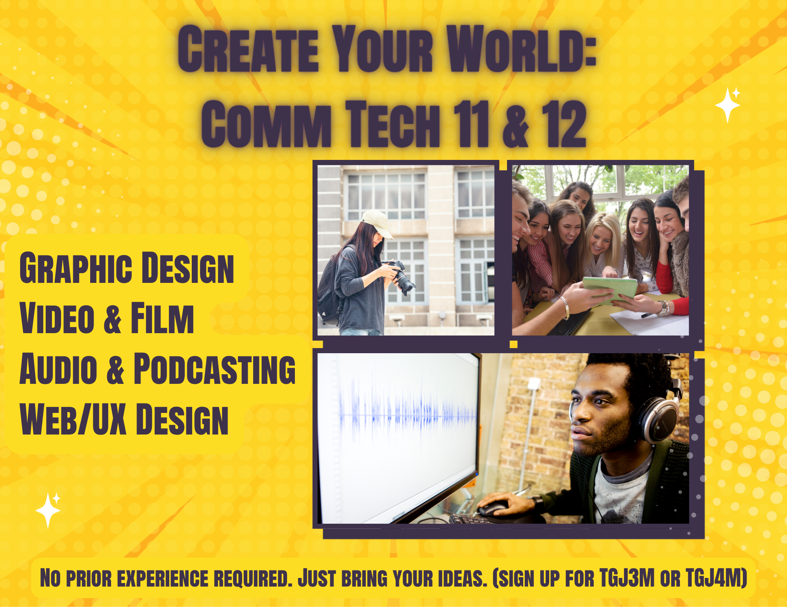

Module overview
This module explores how communications technology can support creativity, collaboration, and inclusive learning.
Communications Technology is not about the software or the hardware; it is about empowering every student to find their creative voice, regardless of their starting point.
Chad Nedin
Artifact 1.5: Inclusive Course Advertisement

I designed this advertisement for current Grade 10 students exploring their course options, specifically targeting those who might feel intimidated by highly technical classes (a hesitation I've noticed firsthand while teaching Comm Tech, Comp Tech, and Tech Design in my Grade 9 TAS1O and Grade 10 classes). To make the course appealing and inclusive, I used a collage of diverse students collaborating across different media types, rather than relying on the stereotype of a student sitting alone at a computer. I intentionally included the phrase 'No experience required' to help ease the minds of students who might not have access to heavy production software at home. I want them to know they aren't starting at a disadvantage. From a design standpoint, I went with high-contrast text and a clean sans-serif font. Keeping AODA standards and Universal Design principles in mind is something I try to practice regularly, so making sure the poster was easily readable was a big priority. At the end of the day, I just want any student looking at this to feel like their ideas actually have a place in the Comm Tech lab.
View module details